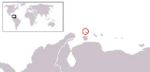

De: La Frikipedia, la enciclopedia extremadamente seria.
De: La Frikipedia, la enciclopedia extremadamente seria. De: La Frikipedia, la enciclopedia extremadamente seria.
| De la serie Países del planeta tierra: | |||||
| Aruba (Arepa para los amigos) | |||||
|---|---|---|---|---|---|
| |||||
| Lema: "¡Mientras seamos Arias seremos fuertes | |||||
| Himno: ¡El mejor sushi es de Aruba!
| |||||
| 
| |||||
| Capital | Oranjestad | ||||
| Mayor ciudad | Oranjestad | ||||
| Lenguas oficiales | Español | ||||
| Gobierno | Socialismo del siglo XXI | ||||
| Presidente Vitalicio | Hugo Chávez | ||||
| Área | 2 metros | ||||
| Población | 3 perros, 4 gatos, 40, pajaros y 1000 humanos (sin contar las hormigas) | ||||
| Moneda | las flores | ||||
| Zona horaria | 5- la de españa | ||||
| Dominio Internet | .paisnazi | ||||
| Código telefónico | 0666
| ||||
| dicen que chavez lo controla) | |||||
El pais mas pequeño del mundo, ocupa 2 metros de territorio marino, esta ubicado en las antillas pequeñas, esta al norte de Venezuela, al oeste de curazao y en el mar caribe (¿sabes donde es eso verdad?), fue de los holandeses hasta que holanda se dio cuenta de que no valian la pena, y despues paso a formar parte de Los Paises Pequeños Bajos.
La isla forma parte de los Paises Bajos (Junto a las antillas mas grandes que las pequeñas y Los Paises Bajos), Aruba y las antillas un poco mas grandes que las pequeñas no forman parte de la Union Europea, porque ellos no lo concideran pais, pero si a las demas islas de un tamaño razonable, hay otros paises que tampoco estan en la union europea por esa misma razon (Groenlandia(se concidera hielo) Islas Caiman), pero encambio hay otros paises fuera de Europa que si se concideran (Guyana en sudamerica, ningun otro). Pero de todas maneras, todos los que son parte de los paises bajos, tienen pasaporte holandes, y ala vez Europeo.
En el 1500 España puso un letrero de que era suyo, pero despues fue conquistada por Los Paises Bajos quitando el letrero que dejaron los Españoles en 1636 y se mantubo por casi 2 siglos hasta que vida inteligente llegara a la isla y quitaran el letrero que dejaron Los Paises Bajos. En ese momento Los Pises Bajos querian venganza porque el letrero era de oro y diamantes encrustados, junto a esmeraldas. Asi que llegaron barcos a atacar, aviones, helicopteros, humanos con AK-47 y contrataron reggaetoneros para que cantaran y eliminaran poblacion inteligente de la isla; los arubanos estaban rezando a Diox para que los salvara pero nunca llego, y tuvieron que pedir ayuda a paises vecinos que tampoco ayudaron, tuvieron que pedir ayuda a los wombats, y asi comenzo la era de la esclavitud (lee mas abajo)
Despues de que los wombats atacaran y destrulleran, el jefe de la tribu les dijo a los arubanos que o eran sus esclabos o les declaraban la guerra, como no quedaba ningun arubano inteligente por la culpa de reggaeton (o como coño se escriba), dijeron que se rendian, y los arubanos tenian que hacer lo siguiente por los wombats:
Hasta que un libertador llego a destruirlos por completo, el primer ministro Henny Emo, que llorando y odiandose, hizo que los wombats de la pena abandonaran la isla, desde ese momento era un pais libre.
Aruba es parte de Los Paises Bajos pero posee sus propias leyes y consitucion, pero no tiene fuerzas armadas, contraccion, ciudadania y relaciones exteriores, y tienen su moneda oficial, las flores. El presidente Vitalicio es Hugo Chavez que la compro por un par de dolare, porque la isla no vale nada, ah estado probando el socialismo del siglo XXI y solamente Fidel Castro, Hugo Chavez, Lennin y los ciudadanos de Aruba son los unicos que saben el significado de el socialismo del siglo XXI.
Los ministros son los que Chavez quiera pero se pueden destacar:Hugo Chavez, Hugo Chavez, Hugo Chavez y ¿ya menciones a el ministro Hugo Chavez?
Aruba tiene los partidos politicos de Venezuela, eso significa que son mas o menos 20000 partidos, pero se pueden destacar:MVR, PPT (Plomo Pa Todos), TUPAMARO, PCV (Los comunistas) entre otros ...
El pais carece de estos debido al el tamaño de el pais.
El pais no tiene rios y es llano (en cierto sentido), tiene playas al norte y al sur con arena blanca, tiene colinas en el centro de la isla de 3 centimetros mas o menos aunque segun investigaciones hechas por los amantes de Satan se hallaron colinas que superan increiblemente los 0000000000000000000000,27 cm de altura(!!!).Esta situada 40 KM al norte de Venezuela.
El 70% del PIB es del turismo, antes era el petroleo, pero ahora es como el 10% del PIB y probiene otro 20% del PIB es del comercio con Esados Unidos, Los Paises Bajos y Venezuela. Los ciudadanos son ricos porque el dinero son las flores arubeñas y todos los ciudadanos tienen flores en sus casas mas el trabajo, son ricos.
La poblacion en mayoria es descendiente de los Aspañoles y Holandeses que dominaron la isla, junto a los Wombats que eran los nativos en la era precolombina, y sominaron la isla dos veces, y la etnia se nota demaciado siendo una de las mas fuertes de America.
todos los idiomas son permitidos, pero los que mas se hablan son:Dialecto del español comunista, Español y el Ingles. Normalmente tambien se a hablado un poco mas Mandarin, japones, gallego, Portugues, holandes, aleman, aleman colonial, turco, frances, vasco, hindu, arabe y lenguas muertas que nisiquiera los que las hablan saben como se llaman.
Este pais goza en religiones, se pueden destacar:Cristiano, Catolica, Evangelica, Satanica, Hindu, Yakuza, Judia, Musulman y Chavista; normalmente hacen guerrillas pero se desintegran cuando ven que para que conquistarian algo tan pequeño e insignificante como Aruba.
normalmente se tienden dias de celebracion Española y Holandesa, pero el que ello prefieren es el Carnaval, sus indigenas son ahora las mascotas, otra importante celebracion es el dia de San Juan e otros.
Al igual que Venezuela y otros paises chavistas del caribe(puerto rico, republica dominican y Cuba), el que mas juegan y el favorito es el beisbol y otros deribados de ese deporte (como softboll), normalmente los que juegan futbol se van a los Paises Bajos(por que hay no hay nadie interesado en gastar sus flores en el futbol) para continuar su carrera en un club de decimooctava division "b" de Holanda.El futbol se juega usualmente con cocos y las canchas son de 2x2 por razones de espacio.No tienen Liga por no ser solventada con las flores del gobierno Emo-Chavista.
| |
|---|
| Bahamas | Barbados | Dominica | Granada | Guyana | Haití | San Cristóbal y ¿Nieves? | San Vicente y las Granadinas | Santa Lucía | Trinidad y Tobago | Uruguay | Venezuela |
Autor(es):